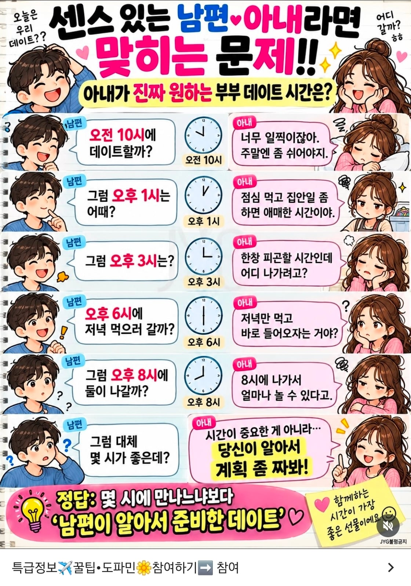

좆까 씨발아
그럼 니가 좀 계획 짜면 어디가 덧나냐?

좆까 씨발아
그럼 니가 좀 계획 짜면 어디가 덧나냐?
시간보다 알아서 계획 짜는게 중요하니까
게이마냥 꼬치 꼬치 묻지말고
대충 본인이 시간 정해서 통보하라는것
댓글에 몇시인지 맞추려고 드는 호구들을 보니 아직 대한민국 남녀평등은 요원하구만
토요일 점심 먹고 놀다가 들어오는 게 좋아
다음 날은 쉬어야지
지ㅋ랄ㅋ
애초에 연애하는데 저런 여자를 만난다는건 걍 개호구라는 뜻임ㅋㅋㅋ 여자가 존나 만만하게 보고 만난다는거라 언제든 괜찮은 남자랑 잘 될 기회 있으면 갈아탐ㅋㅋㅋ
화장할 시간은 줘야지
점심 때 나가자는 얘기지
자기 준비하는동안 니가 집안일 해두고 점심은 나가서 먹자
가상의 와이프 만들어서 개패고있네 여자가 만든건 맞나
시발 개그츤련
병신엠창슬롭 존나만들어오네 진짜 ㅋㅋㅋ
요즘 타이밍에 연애하는 사람들은 남녀불문 보통 많이 깎아지고 정상화돼서 저정도 개지랄은 안하지않냐. 외모가 엄청 뛰어나서 성격이 커버되는게 아니라면
외모가좋으면 저지랄도안함 애매한애들이 더 그러지
11시반 ~ 12시반사이
점심자체를 외식하면됨
캭 퉤
주.말.엔.좀.쉬.어.야.지.
선택장애 있어서 그런거니까 그냥 너 하고싶은대로 하자고 하면 따라온다
정 상대가 계획 짜길 바란다면 상대가 싫어하는 좆같은 일정만 풀로 채워
주말엔 그냥 쉬자 씨발
오후 1시는 어때가 아니라 오후 1시까지 예약잡았으니 튀어와라로 해야 답인건가
정답 : 아내가 10시에 피곤하다고 하고 잘동안 집안일 다 해놓고 1시에 나가자고 한다
맞벌이임?
연애도 아니고 결혼인디??
ㅅㅂ 유부남인데 줫같네
결혼하고도 저지랄하면
심각하게 이혼고민해야함 애없을때
보기만해도 개빡치네
성인이 스스로 하는게 없네 ㅋㅋ
집안일 할 때도 수많은 선택과 고민을 해서 힘들다고 함
영포티 비츄
이런걸 왜 만들지요?
강아지 키움?
원래 여자는 끌고 다니는거지 설득하는게 아님
목조르고싶네
포티슬~롭
찟어죽일년들 국결이 답이다
지랄이 짜네 시발
진짜 영포티 스레드에서나 나올 폐기물이 ㅅㅂ
6시에 만나서 저녁+스케줄 더 짜오라는 뜻인가?